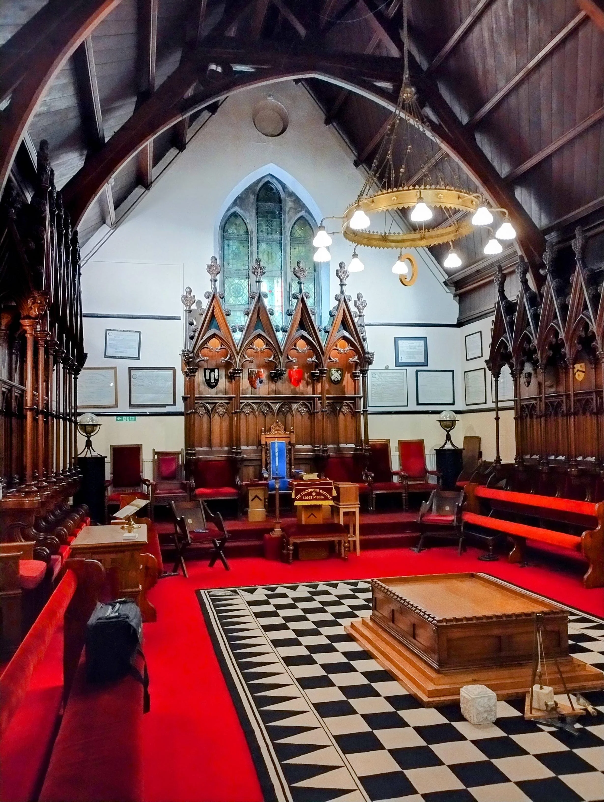

Freemasonry is one of the world's oldest fraternal organisations, centred on friendship, personal development and charity.
Freemasonry encourages individuals to reflect, improve and contribute positively to society. It offers a unique combination of tradition and modern values, providing both a sense of belonging and opportunities for personal growth.
At its heart, Freemasonry is built on three key principles:
Strong friendships built on shared values and mutual respect.
Opportunities to learn, reflect and develop confidence.
A long tradition of supporting local and national causes.
About the Lodge
St John in Bedwardine Lodge has had a long-standing presence in Worcester since 1956, bringing together individuals from all walks of life in a spirit of friendship, integrity and shared purpose.
We meet regularly to uphold tradition, support one another, and contribute positively to the wider community through fellowship, personal development and charitable work.
Contact Us